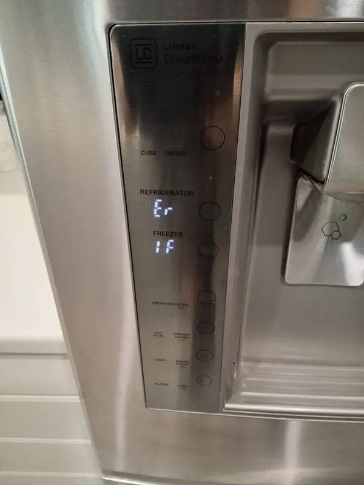

LG Refrigerator Repair: Why Modern Smart Refrigerators Require Specialized Diagnostics
Modern LG refrigerators have evolved far beyond traditional cooling appliances. Today’s smart refrigerators combine inverter compressor systems, electronic control boards, digital sensors, Wi Fi connectivity, temperature management systems, and advanced energy efficient technology designed to improve cooling performance and appliance efficiency. While these features provide many benefits for homeowners, they also make refrigerator diagnostics and repair significantly more complex.
Unlike older refrigerators that relied primarily on mechanical controls, modern LG refrigerators use multiple electronic systems that constantly communicate with one another. Temperature sensors, evaporator fan motors, compressor controls, defrost systems, and smart communication boards must operate together correctly to maintain proper cooling conditions.

When even one component begins malfunctioning, the refrigerator may develop multiple performance issues simultaneously. One of the biggest challenges in modern LG refrigerator repair is identifying the true source of the problem. A refrigerator that stops cooling properly may appear to have a compressor failure, but the actual issue could involve airflow restrictions, sensor malfunctions, damaged control boards, frozen evaporator coils, or electronic communication errors. Accurate diagnostics are essential because replacing the wrong component can increase repair costs without solving the original problem.
Many LG refrigerators now use inverter linear compressor technology designed to improve energy efficiency and reduce noise levels. These systems operate differently than traditional refrigerator compressors and require specialized testing procedures. Compressor related problems may cause fluctuating temperatures, extended cooling cycles, unusual noises, frost buildup, or complete cooling loss. Professional LG refrigerator repair requires technicians who understand advanced sealed system diagnostics and inverter compressor operation.
Electronic control boards are another major component in modern refrigerator systems. These boards regulate cooling cycles, fan operation, defrost timing, temperature monitoring, and communication between refrigerator components. A failing control board may create intermittent cooling problems, random error codes, display malfunctions, or unstable freezer temperatures. Because electronic failures can mimic other appliance problems, proper testing becomes extremely important during the repair process.
Smart refrigerator features also introduce additional complexity. Wi Fi connectivity, digital touch panels, internal diagnostic systems, and software controlled cooling functions require technicians to stay current with changing refrigerator technology. Ongoing technical training helps professional LG refrigerator repair technicians diagnose newer appliance systems more accurately and efficiently.
Another important factor in refrigerator repair is the availability of replacement parts. Many modern refrigerators use model specific electronic components, sensors, communication boards, and cooling system parts that must match the refrigerator configuration precisely. Professional technicians often carry commonly needed refrigerator parts inside their service vehicles to help complete repairs more efficiently and reduce delays for homeowners.
Professional LG refrigerator repair focuses not only on replacing failed components but also on identifying the underlying conditions that caused the failure. Accurate diagnostics help reduce recurring problems, improve refrigerator reliability, and protect the long term performance of the appliance. Whether your refrigerator develops cooling problems, ice maker failures, electronic display issues, or compressor related symptoms, experienced diagnostics remain one of the most important parts of modern refrigerator repair service.
Professional LG refrigerator repair helps protect long term refrigerator reliability while restoring proper cooling performance for daily household use. Whether your refrigerator is leaking water, making unusual noises, failing to cool properly, or showing electronic error codes, timely diagnostics and professional repair service can help prevent additional appliance damage and restore dependable refrigerator operation.